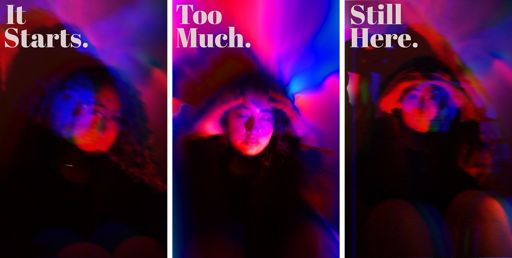

Student project · Selected exploration
It Starts. / Too Much. / Still Here.
A photographic triptych about overthinking, using motion blur, color, and typography to tell an emotional story.

One story in three moments
The series moves from the first anxious thoughts to feeling overwhelmed, then quiet resilience. I used a DSLR with slow shutter speeds to create intentional blur, and Photoshop to adjust color, shadows, and space for typography. Movement, emphasis, and contrast give each poster its own role while the shared palette connects them.